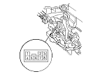

Transmission Gear Selection Switch Test
Remove the center console.
Disconnect the transmission gear selection switch/park pin switch/A/T gear position indicator panel light connector.
Check for continuity between connector terminals No. 2 and No. 3.
There should be continuity when shift lever in the M position, and no continuity when shift lever in any position other than M.
Check for continuity between connector terminals No. 2 and No. 7.
There should be continuity when shift lever pushed toward to upshift position (+), and no continuity with released shift lever to neutral position.
Check for continuity between connector terminals No. 2 and No. 8.
There should be continuity when shift lever pulled toward to down shift position (−), and no continuity with released shift lever to neutral position.
If the transmission gear selection switch is faulty,
replace the switch and shift lever bracket as an assembly.
The transmission gear selection switch is not available separately from the shift lever bracket.
Install the center console.
